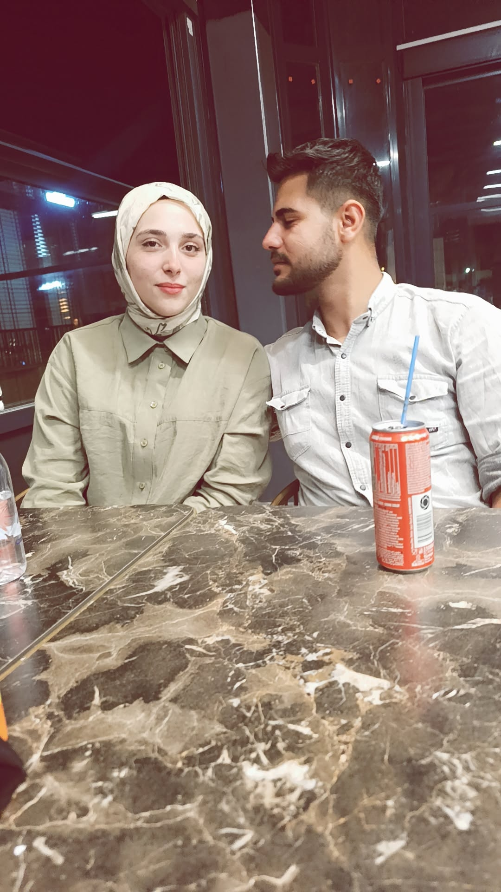
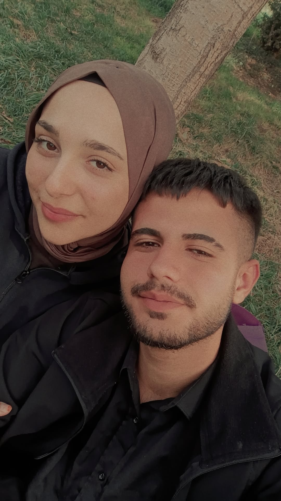
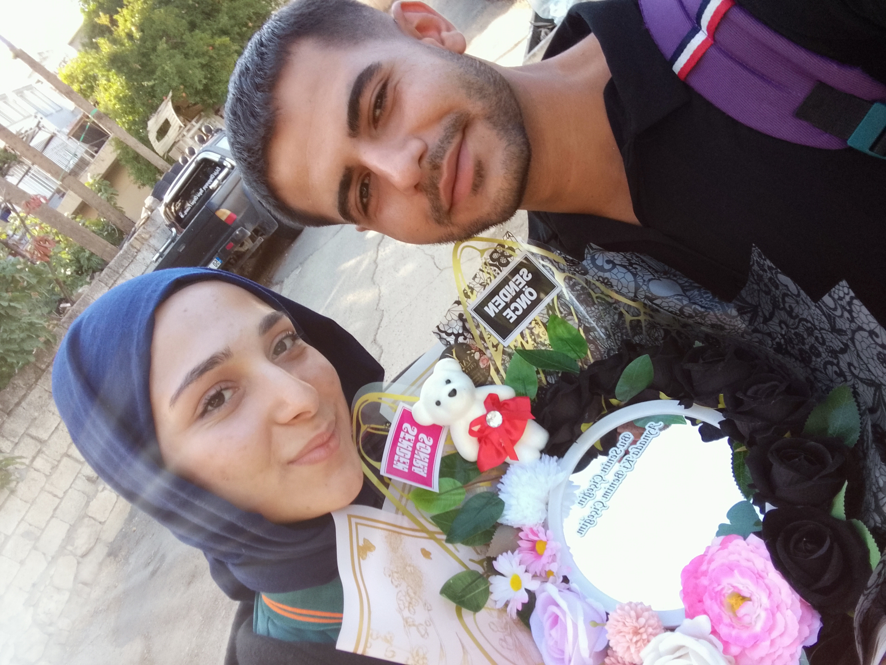
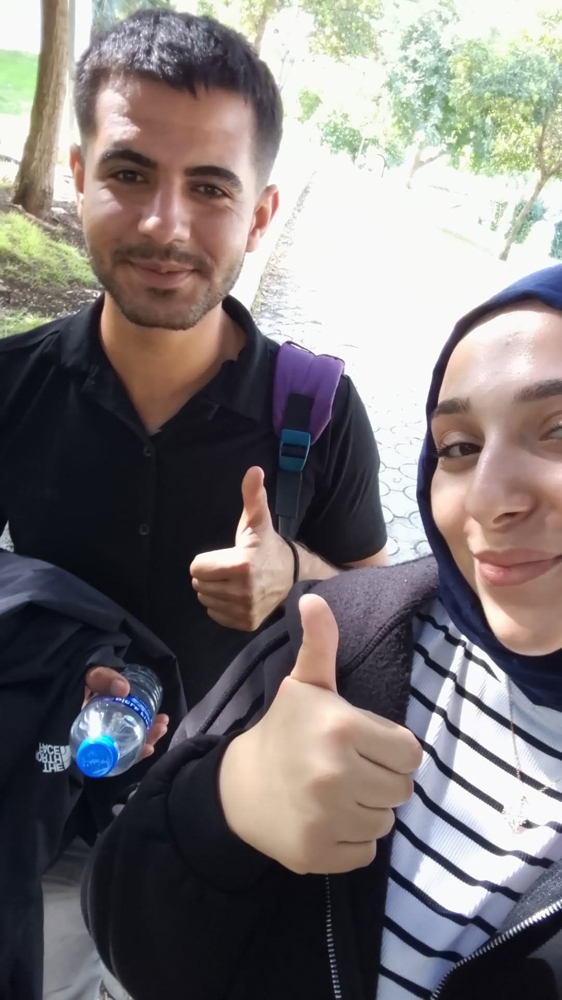
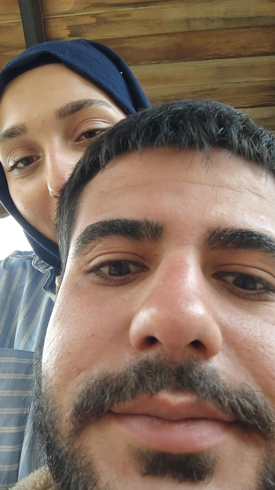
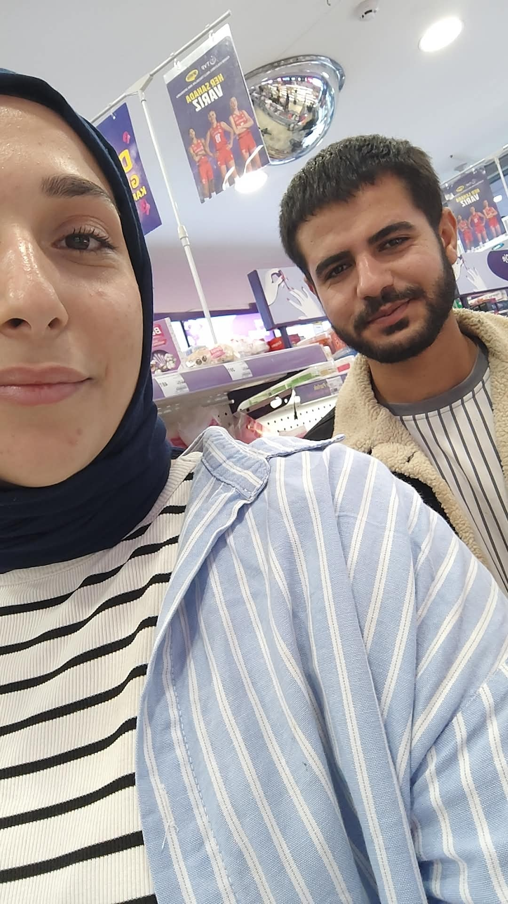

Kalbimin ve Ömrümün Tek Sahibine
İki Buçuk Yıllık Sonsuzluğumuzun, Mücadelemizin ve Aşkımızın Hikayesi
Gözlerime ilk baktığın o anı dün gibi hafızamda taşıyorum. İkimiz de öylesine çekingen, öylesine masum ve utangaç bir haldeydik ki... Ama o an kalbimde öyle bir fırtına koptu, ruhumda öyle bir çiçek açtı ki, kelebeklerin kanat çırpışını bizzat içimde hissettim. O kısacık andan sonra sen benim hayatımın merkezi, aldığım nefesin tek sebebi haline geldin. Her sabah uyandığımda aklımda ve dualarımda sadece sen varsan; her gece başımı yastığa huzurla koyduğumda tek dileğim rüyalarımda bile seninle buluşmak oluyor.
Utangaçlığımızın ve O İlk Bakışın Eşsiz Masumiyeti
Birlikte yazdığımız bu destanın ilk günkü heyecanı.






Biliyorum, bizim hikayemiz asla kolay bir yolculuk olmadı. Etrafımızdaki engeller, çekemeyenler, aramıza mesafe ve soğukluk sokmaya çalışan o kötü niyetli insanlar... Kim ne derse desin, hangi fırtına kopsa biz her zaman birbirimize tutunduk. Bazen benim fevriliklerim, bazen senin kırılmaların oldu; hatalar yaptık, incindik. Ama unutma ki biz birbirimizi sadece sıradan bir hevesle sevmedik. Bizler, hayatın zorluklarına inat, birbirine ruhunun en derin yerinden bağlanmış iki aşığız.
Birlikte Gönül Verip, Birlikte Meydan Okuduğumuz Fırtınalar
Bu görüntüler, bizim yıkılmaz bağımızın ve paylaştığımız eşsiz mutluluğun canlı kanıtıdır.
Beni kırdığım veya üzdüğüm her an için bağışla sevgilim. Sen benim bu hayattaki en güvenli limanım, en büyük şansımsın. Aşkımız her gün yeniden filizlenen ve büyüyen bir mucize.
"Seninle geçen her saniye, ömrüme ömür katan en güzel hediye."
Beni affediyor musun?